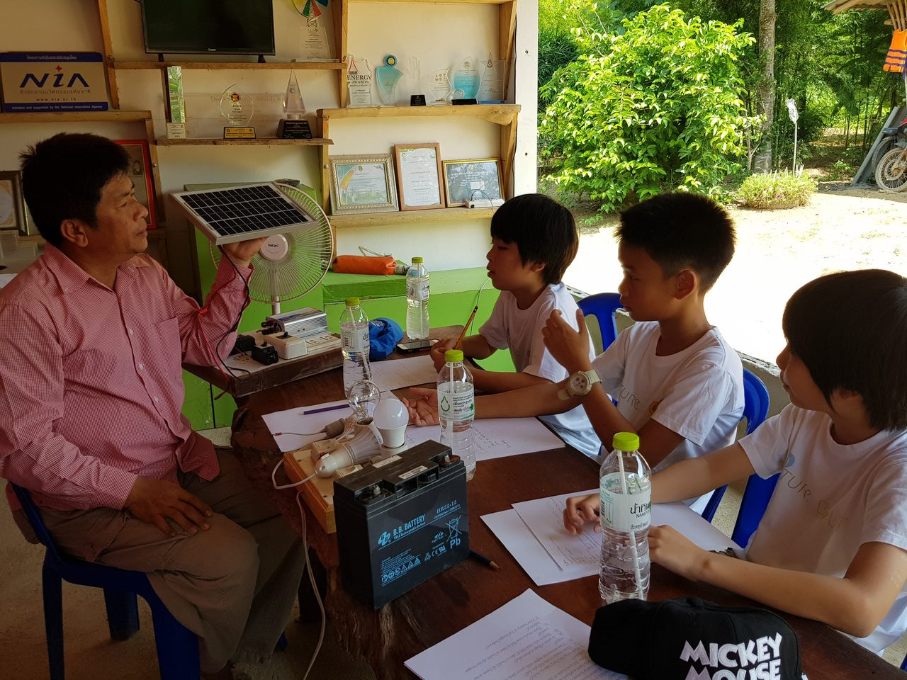
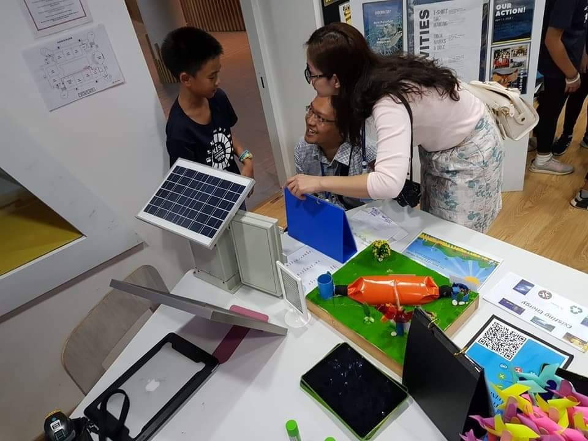
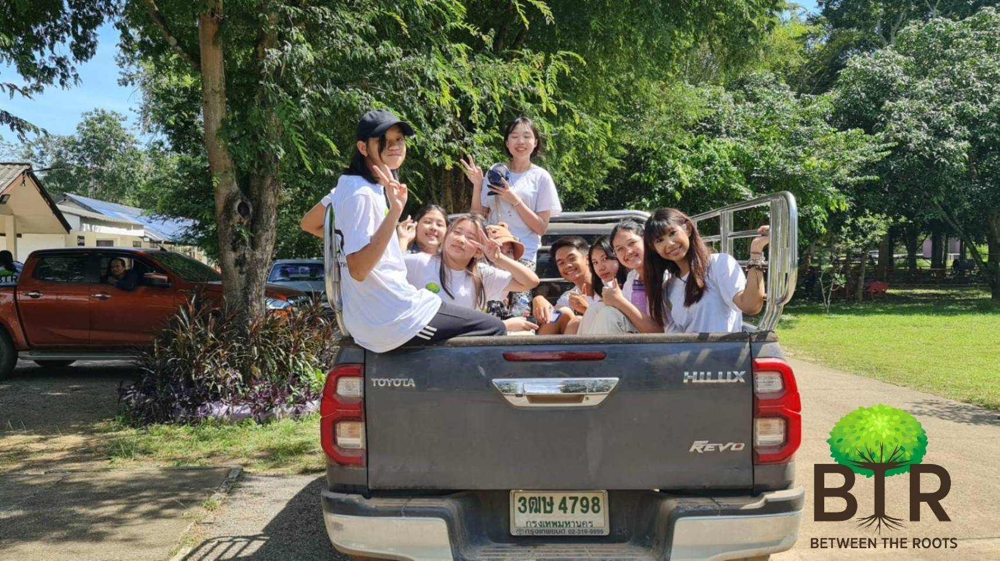

Our Story
Between The Roots did not start out as an organization. It started out as a project I did in 5th grade for my IB PYP Exhibition. We were tasked to pick a UN Sustainable Development Goal to research and do a project on. Being a very indecisive person, it took me ages to decide what I wanted to do. I thought about how I kept getting taught about saving the environment, recycling, climate change, and at one point, renewable energy. All the various types of renewable energy really fascinated me, from solar energy to hydroelectric energy. And thus, I finally had a topic for my personal project, and an SDG to link it to: SDG 7. As I researched renewable energy in Thailand, I stumbled upon a community around Central Thailand that makes use of a lot of renewable energy. This community is Pa Deng Village.

I became very interested in the community, and thought that it’d be perfect as a resource and guide for my project. So my parents and I drove the three hours there, and the experience was enlightening. I established a connection with the community leader, who was knowledgeable about the environment, but more importantly, saving it. His name is Koson Saengthong, and he was so kind and friendly. He taught me about all sorts of renewable energy methods, like solar panels and biogas balloons. Using what I learnt as inspiration, I completed my personal project and it was an amazing success. That project is one of my proudest works till this day.

Now, post COVID, and almost five years after the project, I kept thinking about Pa Deng Village, and how it must be doing more than just renewable energy. I kept thinking about my passions: how I want to help others who need it, how I want to help the environment, and how I am passionate about education. Just as how Pa Deng Village was an inspiration for me, I hope I can give back to them, and I hope I can use my experiences to assist other communities as well. The combination of these passions and inspirations is what eventually created Between The Roots. I hope that with Between The Roots, I can make use of environmental innovations to bring people together and strive for a common goal: sustainability.
